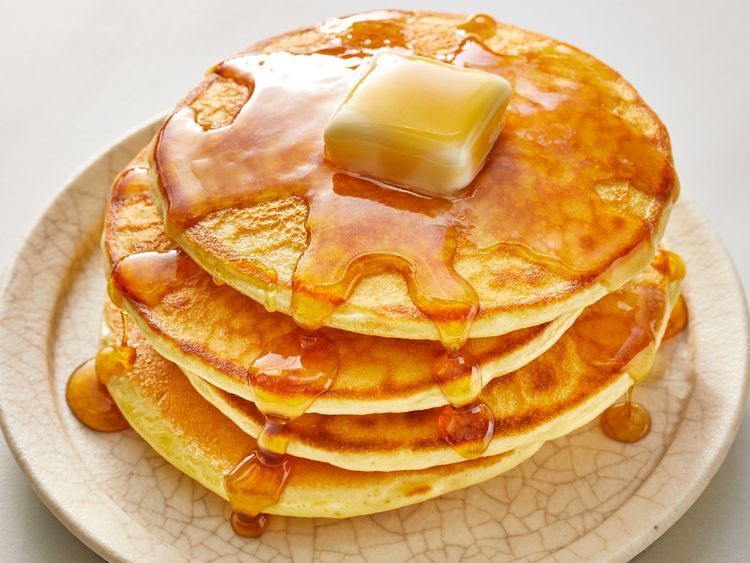

Home
Good Old-Fashioned Pancakes

Description
This is a classic pancake recipe that's perfect for a weekend breakfast.
Ingredients
- 1 1/2 cups all-purpose flour
- 3 1/2 teaspoons baking powder
- 1 teaspoon salt
- 1 tablespoon white sugar
- 1 1/4 cups milk
- 1 egg
- 3 tablespoons butter, melted
Instructions
-
In a large bowl, sift together the flour, baking powder, salt, and
sugar.
-
Make a well in the center and pour in the milk, egg, and melted butter;
mix until smooth.
- Heat a lightly oiled griddle or frying pan over medium-high heat.
-
Pour or scoop the batter onto the griddle, using approximately 1/4 cup
for each pancake. Brown on both sides and serve hot.